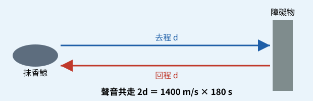
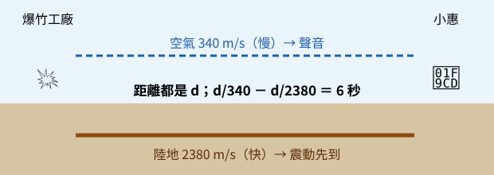
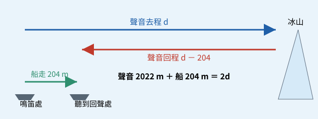
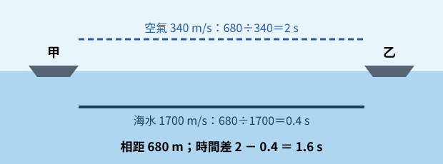
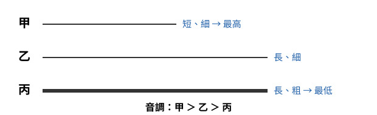
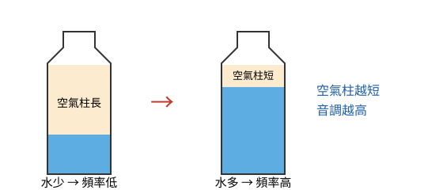
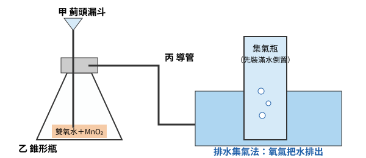
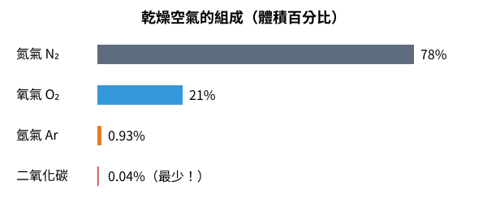
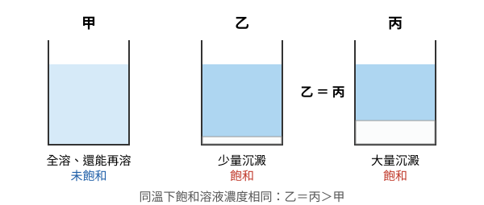

01
第 6 回 基礎演練 1｜原作答：未作答
影響聲速的因素
下列哪些因素會影響聲速？甲.介質的密度 乙.介質的溼度 丙.介質的溫度 丁.介質的種類
🧭 引導解題：不會嗎？跟著提問一步一步想
正確答案：D
聲速由「介質」決定，介質的各種性質都有影響：
種類：固體＞液體＞氣體
溫度：空氣溫度越高，聲速越快
溼度：空氣越潮溼，聲速越快
密度：介質密度不同，聲速也不同
四個都會影響，選 (D)。
解題關鍵：聲速只和「介質」有關，和聲音大小、高低無關。
依章節概念分類，共 24 題（八年級 聲音（3-2～3-4）與 空氣、水溶液）。每章開頭有重點整理表；不會的題目先點「🧭 引導解題」，跟著提問一步一步想出算式；選擇答案後，立即顯示正確答案與一步一步的教學算式；作答完可下載錯題詳解 DOCX（含圖）。原為填充題者已改寫成選擇題；需要圖解的題目附上自製示意圖。
2 題
重點：物體振動才會發聲，振動停止聲音就停止；聲音要靠介質傳播，真空不能傳聲；聲速和介質的種類、溫度、溼度、密度都有關
| 介質 | 聲速大約 | 記法 |
|---|---|---|
| 空氣（15℃） | 340 m/s | 氣體最慢 |
| 水 | 約 1500 m/s | 液體居中 |
| 鋼鐵 | 約 5000 m/s | 固體最快 |
| 影響聲速的因素 | 種類、溫度、溼度、密度 | 溫度越高，空氣中聲速越快 |
下列哪些因素會影響聲速？甲.介質的密度 乙.介質的溼度 丙.介質的溫度 丁.介質的種類
正確答案：D
聲速由「介質」決定，介質的各種性質都有影響：
種類：固體＞液體＞氣體
溫度：空氣溫度越高，聲速越快
溼度：空氣越潮溼，聲速越快
密度：介質密度不同，聲速也不同
四個都會影響，選 (D)。
解題關鍵：聲速只和「介質」有關，和聲音大小、高低無關。
用手按住振動中的音叉，則音叉會出現何種變化？
正確答案：C
手按住音叉 → 阻止音叉振動
振動停止 → 聲音也跟著停止
所以音叉會「迅速停止振動」，選 (C)。
這說明：物體發聲時一定在振動。
解題關鍵：沒有振動就沒有聲音。
6 題
重點：距離＝速率 × 時間；回聲：聲音「一去一回」，走了 2 倍距離；兩條路徑比快慢：時間差＝慢的時間－快的時間
| 題型 | 關鍵式子 |
|---|---|
| 回聲測距 | 2d＝v × t → d＝v × t ÷ 2 |
| 邊走邊鳴笛（船） | 聲音走的＋船走的＝2d |
| 兩種介質到達時間差 | Δt＝d/v慢－d/v快 |
| 回聲能分辨 | 時間間隔 ≥ 0.1 秒 → d ≥ v × 0.1 ÷ 2 |

抹香鯨在海中發出 28,000 赫的探測聲波，3 分鐘後接收到經障礙物反射回來的聲波，已知海水的傳聲速率為 1400 m/s，試問此障礙物距抹香鯨多少公里？
正確答案：C
先換單位：3 分鐘＝180 秒
聲音一去一回：走的總距離＝1400 × 180＝252000 m
障礙物距離＝252000 ÷ 2＝126000 m＝126 公里，選 (C)。
⚠ 28000 赫是頻率，和距離無關（陷阱）。
解題關鍵：回聲要除以 2；時間單位要換成秒。

小惠住家附近的爆竹工廠爆炸，小惠感受到震動後，經 6 秒才聽到爆炸聲，則工廠距離小惠約為多少公尺？（已知當時陸地聲速 2380 m/s，空氣聲速 340 m/s）
正確答案：B
震動走「陸地」（快），聲音走「空氣」（慢），距離都是 d
時間差：d/340－d/2380＝6
通分：d × (7－1)/2380＝6（因為 2380÷340＝7）
d × 6/2380＝6 → d＝2380 m，選 (B)。
驗算：2380/340＝7 秒，2380/2380＝1 秒，7－1＝6 ✓
解題關鍵：兩條路徑距離相同，用「時間差」列式。

某船以等速度 34 m/s 朝冰山前進，在船上的人於鳴汽笛後 6 秒才聽到由冰山反射的回聲，若當時聲速為 337 m/s，則鳴汽笛時，船與冰山的距離為多少公尺？
正確答案：A
設鳴笛時船與冰山距離 d
6 秒內聲音走：337 × 6＝2022 m
6 秒內船走：34 × 6＝204 m
畫圖可知：聲音走的＋船走的＝2d
2d＝2022＋204＝2226 → d＝1113 m，選 (A)。
解題關鍵：船在前進：聲音路程＋船的路程＝2 倍的原距離。
已知固體傳聲速率較氣體快，且能量也較集中。阿寶把耳朵貼在長鐵管的一端，老皮在另一端輕輕敲打鐵管一次，但阿寶卻先後聽到甲、乙兩次聲響，則下列敘述何者正確？
正確答案：D
同一次敲打，聲音同時從鐵管和空氣兩條路傳出
固體傳聲快 → 先聽到的「甲」是從鐵管傳來
固體傳聲能量集中 → 鐵管傳來的聲音比較大聲
甲：鐵管、較大聲；乙：空氣、較小聲，選 (D)。
解題關鍵：題目給的兩個條件「速率快」「能量集中」各回答一個問題。

靜止在海面上的甲船發出聲波訊號，訊號同時由空氣及海水以直線傳至同樣靜止在海面上的乙船，兩船相距 680 m。已知空氣中聲速 340 m/s，海水中聲速 1700 m/s，則乙船先後接收到兩個聲波訊號的時間差為幾秒？
正確答案：C
空氣：t＝680 ÷ 340＝2 秒
海水：t＝680 ÷ 1700＝0.4 秒
時間差＝2－0.4＝1.6 秒，選 (C)。
⚠ (D) 2 秒只算了空氣，還要扣掉海水的時間。
解題關鍵：「時間差」要兩條路都算，再相減。
已知回聲與原聲的時間間隔在 0.1 秒以下時，人耳不易區別所聽到的聲音。若聲速為 350 m/s，則發聲者與障礙物的距離須超過多少公尺，回聲會較明顯？
正確答案：B
時間間隔要超過 0.1 秒
0.1 秒內聲音走：350 × 0.1＝35 m
這 35 m 是「一去一回」
距離＝35 ÷ 2＝17.5 m，選 (B)。
⚠ 選 35 是忘了除以 2。
解題關鍵：回聲距離 ＝ 速率 × 時間 ÷ 2。
6 題
重點：響度看振幅（分貝）；音調看頻率（弦越短、越細、越緊 → 頻率越高）；音色看波形（分辨是誰的聲音）
| 特性 | 由什麼決定 | 生活例子 |
|---|---|---|
| 響度（大小聲） | 振幅，單位分貝 dB | 每增加 10 dB，強度變 10 倍；0 dB 是人耳可聽見最小聲 |
| 音調（高低） | 頻率，單位赫 Hz | 弦短／細／緊、空氣柱短 → 音調高 |
| 音色 | 波形 | 聽聲音就知道是媽媽在叫你 |
座頭鯨會到溫暖的海域繁殖，在此海域中有不少鯨魚在此繁殖，然而母鯨卻能從眾多幼鯨中分辨出自己子代的所在位置，而不會判斷錯誤，這是聲音的哪個特性？
正確答案：A
題組文字：「每隻鯨魚的聲音皆獨一無二」
每個發聲體的聲音波形不同 → 音色不同
母鯨靠音色認出自己的孩子
就像我們聽聲音就知道是誰在說話，選 (A)。
解題關鍵：分辨「是誰」的聲音 → 音色。
一般常用分貝作為判斷聲音響度的單位，關於分貝的敘述，下列何者錯誤？
正確答案：B
(A) 分貝 dB＝1/10 貝 ✓
(B) 人耳可聽見最小聲音是 0 分貝，不是 10 分貝 ✗
(C) 每增加 10 dB，強度變 10 倍：40－10＝30 dB → 10×10×10＝1000 倍 ✓
(D) 分貝越大 → 越大聲 → 振幅越大 ✓
找錯誤，選 (B)。
解題關鍵：0 dB＝聽得到的最小聲；＋10 dB → ×10 倍。

貝貝以相同力道撥動材質及鬆緊度相同的甲、乙、丙三條弦，若三者的弦長、截面積如附圖所示（甲短而細，乙長而細，丙長而粗），則音調高低的比較下列何者正確？
正確答案：C
音調由頻率決定：弦越短、越細、越緊 → 頻率越高
甲和乙一樣細，甲比較短 → 甲＞乙
乙和丙一樣長，乙比較細 → 乙＞丙
甲＞乙＞丙，選 (C)。
解題關鍵：控制變因比較：一次只看一個不同點。
以木槌敲擊甲～丙三支音叉時，音叉發出聲音的頻率及強度：甲：400 赫，50 分貝；乙：300 赫，80 分貝；丙：100 赫，60 分貝，則何者的聲音可傳得最遠？
正確答案：B
傳得遠不遠看「響度」（能量大小），不是看頻率
分貝越大 → 能量越大 → 傳得越遠
乙 80 分貝最大，選 (B)。
解題關鍵：傳多遠看分貝；音高看赫茲。
太郎練習彈烏克麗麗，左手壓弦、右手撥弦使烏克麗麗發出聲音，試問下列何種方法可以使同一條弦產生音調較高的聲音？
正確答案：C
音調高低看頻率
同一條弦：振動部分越短 → 頻率越高 → 音調越高
撥弦力道變大只會變大聲（響度），不會變高
選 (C)。
解題關鍵：弦越短、越細、越緊 → 音調越高。

大利拿一空寶特瓶置於水龍頭下裝水，當瓶中的水越來越多時，大利聽到瓶中因裝水而產生的聲音頻率會越變越如何？
正確答案：A
裝水時發聲的是瓶中的「空氣柱」
水越多 → 上方空氣柱越短
空氣柱越短 → 振動越快 → 頻率越高
答案：越來越高，選 (A)。
解題關鍵：空氣柱越短，音調越高（像吹不同長度的笛管）。
8 題
重點：乾燥空氣：氮 78%、氧 21%、氬 0.93%、二氧化碳 0.04%；氧氣：雙氧水＋二氧化錳，排水集氣法，線香復燃；二氧化錳是催化劑：加快反應，本身不消耗
| 比較 | 氧氣 O₂ | 二氧化碳 CO₂ |
|---|---|---|
| 藥品 | 雙氧水＋二氧化錳 | 大理石（碳酸鈣）＋稀鹽酸 |
| 裝置 | 固體＋液體、不加熱（同一套） | 固體＋液體、不加熱（同一套） |
| 收集 | 排水集氣法 | 向上排空氣法（也可排水法） |
| 檢驗 | 線香復燃 | 澄清石灰水變混濁 |
| 可燃性 | 助燃，本身不可燃 | 不可燃、不助燃 |

附圖為製備氧氣的實驗裝置示意圖（氣體導入倒置裝滿水的集氣瓶），圖中收集氣體的方式稱為什麼？
正確答案：A
氧氣不易溶於水
集氣瓶先裝滿水倒置在水槽中
氧氣進入瓶內，把水「排」出去
這種方法叫「排水集氣法」，選 (A)。
解題關鍵：名稱要寫完整：排水集氣法。

乾燥空氣中含量最多的氣體為何？
正確答案：A
乾燥空氣的組成（體積比）：
氮氣 約 78%
氧氣 約 21%
氬氣 約 0.93%
二氧化碳 約 0.04%
最多的是氮氣，選 (A)。
解題關鍵：記住順序：氮＞氧＞氬＞二氧化碳。
比較甲.二氧化碳、乙.氧氣和丙.氬氣三者在乾燥空氣中所占的比例，由大排至小的順序為何？
正確答案：A
氧氣（乙）約 21%
氬氣（丙）約 0.93%
二氧化碳（甲）約 0.04%
乙＞丙＞甲，選 (A)。
⚠ 二氧化碳雖然常被提到，但含量其實最少。
解題關鍵：氮＞氧＞氬＞二氧化碳。
葳葳在實驗室中以二氧化錳與雙氧水製造氧氣，二氧化錳在此實驗中的功能為何？
正確答案：A
雙氧水本身就會慢慢分解產生氧氣（不加也會反應，只是很慢）
二氧化錳是「催化劑」：加快反應速率
反應後二氧化錳本身不會被消耗
選 (A)。(C) 錯：雙氧水不用二氧化錳也會分解。
解題關鍵：催化劑＝加快反應、本身不消耗。
若氧氣的生成量增加太快時，下列哪一種處理方法最好？（甲：薊頭漏斗、乙：錐形瓶、丙：導管）
正確答案：B
反應太快 → 要降低雙氧水的濃度
由薊頭漏斗（甲）加水 → 雙氧水被稀釋 → 反應變慢
(A) 加雙氧水會更快；(C) 加二氧化錳也會更快
(D) 導管移出水面，氧氣跑掉也收集不到，沒有解決問題
選 (B)。
解題關鍵：濃度越低 → 反應越慢。
關於氧氣與二氧化碳的製備，下列敘述何者錯誤？
正確答案：C
氧氣：雙氧水＋二氧化錳；二氧化碳：大理石＋稀鹽酸
兩者都是「固體＋液體、不加熱」→ 可用相同裝置 ✓
兩者都可用排水集氣法收集 ✓
氧氣、二氧化碳都不可燃（氧氣是助燃）✓
藥品完全不同 → (C) 錯誤，選 (C)。
解題關鍵：看比較表：藥品不同、裝置相同。
懸浮微粒是懸浮在大氣中的微小顆粒，則關於懸浮微粒的敘述，下列何者正確？
正確答案：A
(A) PM2.5 非常小，可以穿透肺泡進入血液 ✓
(B) PM10、PM2.5 是依「粒徑（直徑大小，微米）」分，不是質量 ✗
(C) 懸浮微粒多 → 霧濛濛 → 能見度「降低」✗
(D) 政府用的是「空氣品質指標 AQI」✗
選 (A)。
解題關鍵：PM 後面的數字＝粒徑（微米）。
我們每日使用後的廢水經汙水處理廠去除汙染物後，會形成下列何者排放到河川中，以減少環境汙染？
正確答案：B
汙水處理廠處理後「排放到河川」的水 → 放流水
若再進一步處理、拿回來使用（澆花、沖廁）→ 再生水
題目說「排放到河川中」→ 選 (B)。
解題關鍵：放流水→放回河川；再生水→再拿來用。
2 題
重點：飽和溶液：同溫度下濃度都一樣；重量百分率濃度＝溶質質量 ÷ 溶液質量 × 100%；體積要先換成質量：質量＝密度 × 體積
| 狀態 | 特徵 |
|---|---|
| 未飽和 | 再加溶質還能溶 |
| 飽和 | 有沉澱、再加也不溶；同溫下濃度相同 |
| 飽和＋加水 | 沉澱可再溶解 |

室溫下，桌上有三杯食鹽水，甲杯中的食鹽完全溶解，若再加入一些食鹽，仍可繼續溶解；乙杯中有一些食鹽未溶解，攪拌後仍無法溶解；丙杯中有相當多的食鹽未溶解，攪拌後仍無法溶解。試問下列相關的敘述何者錯誤？
正確答案：A
甲：還能再溶 → 未飽和
乙、丙：有沉澱、攪拌也不溶 → 都是飽和溶液
同溫度下，飽和溶液的濃度都一樣：乙＝丙
沉澱的食鹽沒有溶進水裡，不算在濃度內
正確關係：乙＝丙＞甲 → (A) 說丙＞乙，錯誤，選 (A)。
解題關鍵：飽和溶液濃度相同，沉澱多少不影響濃度。
將 10 mL 甲液體溶解在 92 mL 的水中，配製成 102 mL 的水溶液，已知甲液體密度為 0.8 g/cm³，水的密度為 1.0 g/cm³，則水溶液的重量百分率濃度為多少？
正確答案：A
重量百分率要用「質量」，先把體積換成質量
甲（溶質）：0.8 × 10＝8 g
水（溶劑）：1.0 × 92＝92 g
溶液質量＝8＋92＝100 g（不是 102！）
濃度＝8 ÷ 100 × 100%＝8%，選 (A)。
解題關鍵：質量＝密度 × 體積；溶液質量＝溶質＋溶劑。